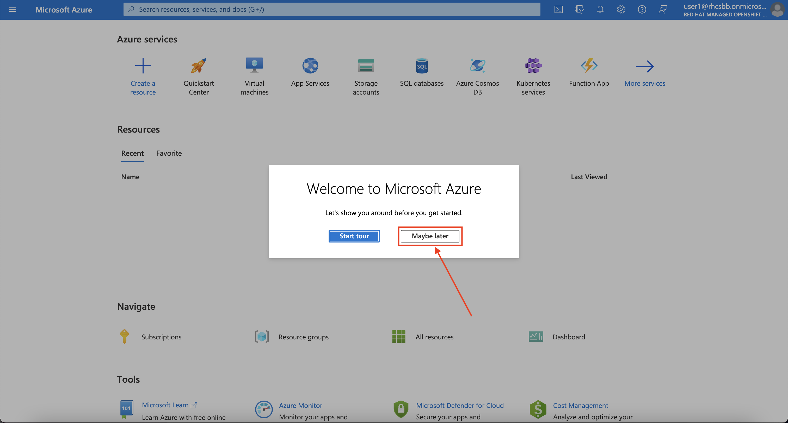
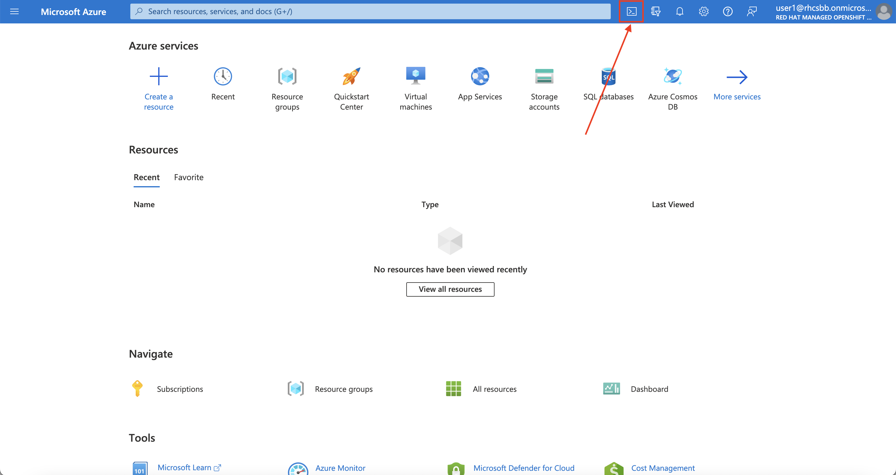
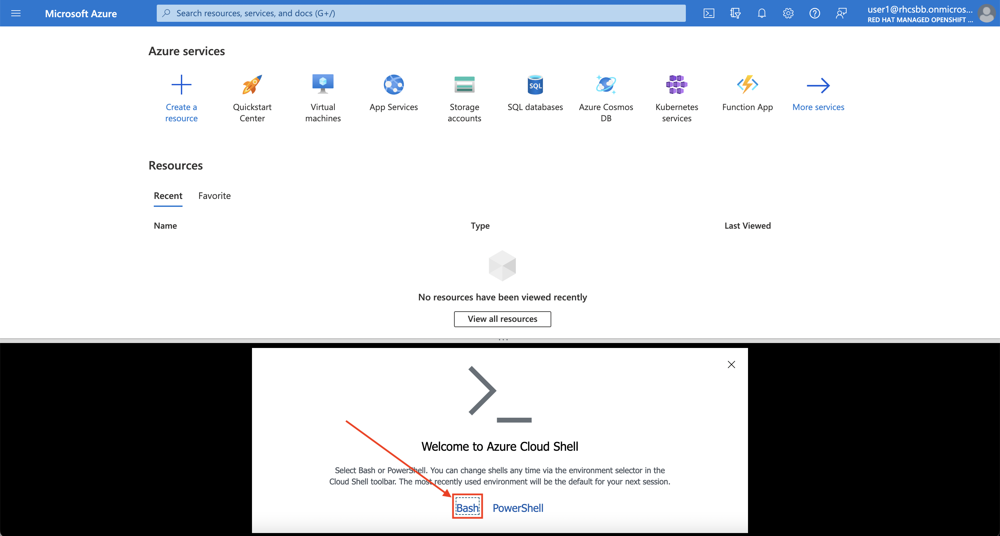
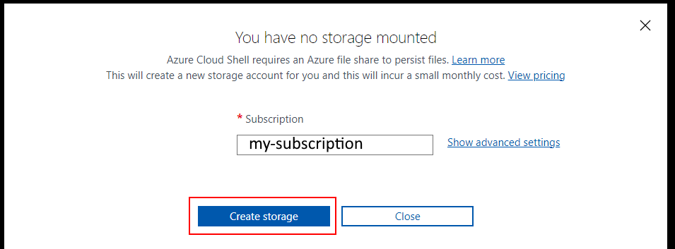

Environment Setup
The Workshop Environment You Are Using#
This is a self driven workshop that will lead you through learning how to Deploy and Use an ARO cluster. If you are at a Red Hat led workshop, ensure that you are accessing this workshop from the URL provided by the Red Hat team as it may have important differences.
Azure Requirements#
Azure Red Hat OpenShift requires a minimum of 40 cores to create and run an OpenShift cluster. The default Azure resource quota for a new Azure subscription is 10 and does not meet this requirement. Therefore, you have to increase your quota from 10 to a minimum of 40. To request an increase in your resource limit, please consult the Microsoft document titled Increase VM-family vCPU quotas.
You can verify your quota with the following command (change eastus to match the Azure Region you plan on deploying to).
Red Hat Requirements#
In order to Create a cluster with access to OperatorHub (needed for this workshop) you need to Log into the Red Hat cloud console and download a Pull Secret.
-
Login to https://console.redhat.com/openshift/downloads#tool-pull-secret your Red Hat credentials (if you do not have an account you can create one from here).
-
hit the
Downloadbutton and download it to a known location. This workshop assumes the pull secret will be in~/aro-workshop/pull-secret.txt.
Azure Cloud Shell#
Azure Cloud Shell is an interactive, authenticated, browser-accessible shell for managing Azure resources. In this workshop, we'll use Azure Cloud Shell extensively to execute commands.
-
Log into the Azure Portal
-
If this is your first time logging in you can skip the tour of the Azure Portal by clicking the Maybe Later button.

-
To start Azure Cloud Shell, click on the
>_button at the top right corner of the Azure Portal.
-
Once prompted, select Bash from the Welcome screen.

-
On the next screen, you'll receive a message that says "You have no storage mounted". Make sure the Subscription is correct and hit the Create storage button.

- Run any CLI commands provided in this Workshop inside your Cloud Shell prompt.
Configure your local environment#
When your shell is ready and you are at the bash prompt, run the following commands to prepare your Cloud Shell environment for the remainder of the workshop
-
Create a directory to work from
-
Download the prepared workshop setup script
-
Check the newly downloaded
cloudshell-setup.shfile. Likely the defaults will be sufficient, but you may want to change theAZ_LOCATIONto match your preferred Azure Region. When you're happy wil it, run it to set up your environment.You will see a significant amount of output as the script prepares your environment for the workshop.
-
The above setup script will save a file in your home directory containing a set of environment variables. Source this file any time you start a new terminal, or if you're in Azure Cloud Shell consider adding this line to your
~/.bashrcfile.